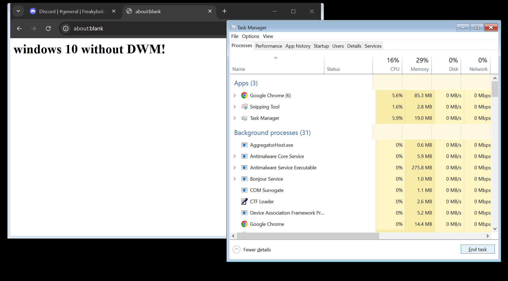
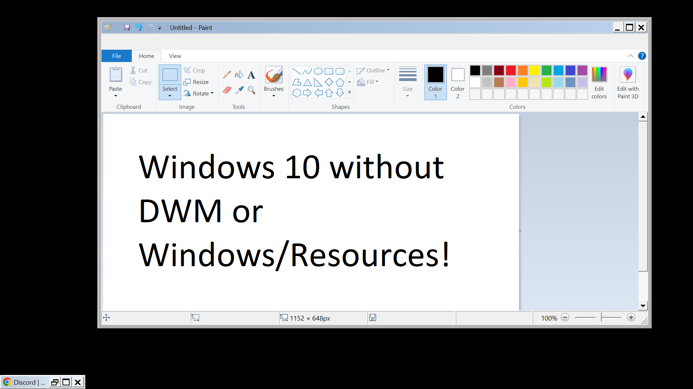

Going through Windows's UI layers
In this blog post, I will share my exploration of Windows's UI layers, and how I got to the classic layer.Part 1: Windows 10
Taking ownership of some files
First things first, I tried using a tool called Run as TrustedInstaller by Sergey Tkachenko, unfortunately that did not work out as I kept gettingAccess is Denied errors. I performed the whoami command to see this:C:\Windows\System32>whoami
nt authority\system
Eventually, I had to take the last resort of taking ownership of the required files to make this happen. After I was done, I deleted
dwm.exe, the program that handles the Windows 10 interface. But according to Enderman's video "What's underneath Windows 11?", the video said that the Logon UI depends on DWM, so if I didn't remove Windows.UI.Logon.dll, I would be greeted by a black screen on boot. So I removed the file, this forces the fallback version of the Logon UI to load.
It turns out that the Shell Infrastructure Host also depends on DWM, so I had to move
sihost.exe to sihost2.exe, and put cmd.exe in place of dwm.exe because Windows has hard checks in place for checking if DWM exists. I didn't reboot yet because it turns out if you did not remove dwminit.dll, the cursor will not work. So I removed that file and then rebooted.
The Windows Basic layer
After my testing PC (ASUS Chromebook C425 with MrChromebox's UEFI firmware) rebooted, I was greeted by a fallback version of Logon UI asking me to press Ctrl + Alt + Del to unlock the computer. Luckily my keyboard driver was still working, so I pressed Ctrl + Alt + Backspace and then logged in.When I logged in, I was greeted by Explorer crashing rapidly, so I opened the Task Manager via the Ctrl + Alt + Del menu, and then ended the Explorer process to stop the rapid crashing. After this, the background stayed black and the taskbar never reappeared. By the way, the backlight keyboard driver by CoolStar stopped working after DWM was removed, it was now totally flawed. However the mouse driver was still working, same for the key remappings.

Chrome was still working, expect that there was now a border at all sides expect the top. Task Manager was working like nothing happened. But sadly, all the UWP apps have died due to them requiring DWM to function.
I later found out that if programs had been open for a while, they will crash and close suddenly. WebGL doesn't work anymore, due to the GPU drivers not being available to Chrome.
Eventually, It was time to peel off the Basic layer, so I renamed
explorer.exe to explorer1.exe (a very bad mistake), and deleted the C:\Windows\Resources folder. Before I did that, I set cmd.exe as a startup program, after that, I restarted the testing PC.
The Windows Classic layer
After I restarted, I was greeted by the same fallback prompt, but the basic theme was now gone, in its place was the classic theme from pre-Windows 8 (it still exists internally in Windows 8 and later). I tried to start Task Manager, but it turns out that without the Aero theme (aero.msstyles) (which was deleted due to the deletion of the Resources folder), Task Manager will crash. Eventually, there was no other option. So I restarted to the UEFI Shell to boot to the Windows Recovery Environment.
Once I got to the Windows Recovery Environment, I logged in with my Microsoft account credientials, and got a command prompt. Then I moved
sethc.exe to sethc1.exe, and copied cmd.exe to sethc.exe. After doing this, I restarted the computer.
When I got to the desktop, I pressed
Shift 5 times and got a Command Prompt, I then launched MS Paint. Chrome was the same state, only difference is the theme. Edge for some reason worked without DWM, but worse.

I eventually had to use my Command Prompt to start PowerShell, and then use
Start-Process cmd -Verb RunAs, only to see a blank UAC dialog, It took a few tries to get the administrator Command Prompt open, after which I executed the takeown and icacls commands on explorer1.exe, I then renamed it to explorer.exe.
After doing this, I started up Explorer via
explorer /n, and its ribbon is slightly broken, but still usable. After a while, I decided to restore everything to where it was by using the backed up files from my microSD card.
Back to Normal
After I restarted, the Windows installation was back to normal, it was a fun journey going through all the layers of the Windows 10 GUI. Heres a list of files that is responsible for stuff I touched:| Program/Library Name | File/Folder Location | Purpose |
|---|---|---|
| Command Prompt | cmd.exe | Responsible for the Command Prompt |
| N/A | \Windows\Resources | Responsible for Windows themes |
| Desktop Window Manager | dwm.exe | Responsible for graphical effects and visual elements |
| DWMInit | dwminit.dll | Responsible for transparency effects, live taskbar previews, animations, and cursor using hardware accleration. |
| Windows Explorer | explorer.exe | Responsible for the File Explorer, Wallpaper, Taskbar, etc. |
| Accessibility shortcut keys | sethc.exe | Responsible for the sticky keys dialog |
| Shell Infrastructure Host | sihost.exe | Responsible for graphical elements |
| Logon User Experience | Windows.UI.Logon.dll | Responsible for providing a UI for LogonUI.exe |
{kind=link}
{kind=link}